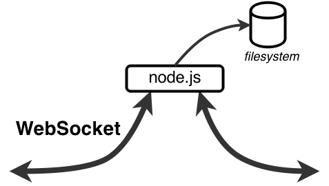
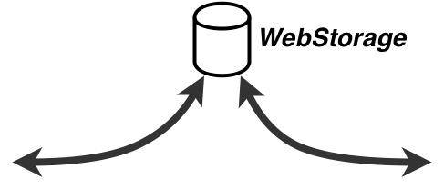
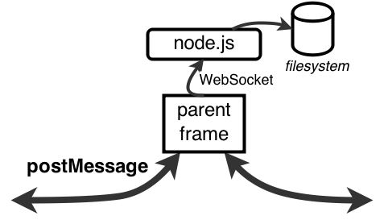

|
reactive data sync lib:
replicated model for your web app
New opportunities bring new challenges; having all that smartphones and tablets
on WiFi/3G, we now need handover (aka continuity), real time sync and offline work.
Those requirements stressed classic architectures leading to fix-on-a-fix stacks
that still can't fully exploit new HTML5 features such as WebSocket or WebStorage.
CRDT is the only approach that allows to fully embrace the reality of distributed
data: we deal with the same data no matter where it resides (see infocentricity).
Our dream is to develop distributed applications the way we did good old local
MVC apps, by fully delegating the data caching/sync magic to a dedicated layer.
Swarm is a replicated model lib (M of MVC) that keeps your data correctly cached
and synchronized in real time using any storage and transport available.
|
|
|
|

In this example, mouse pointer positions are
synchronized in real-time using WebSocket connections
to a node.js server.
Thus, you'll see mouse pointers
of all the people currently playing with this demo.
Just move your mouse over an iframe.
|
|
|
|

In this example, a text is synced in real time using
a simplistic CT implementation (Causal Trees, a CRDT
flavor). Technically, frames sync using WebStorage,
i.e. purely offline, no server connections used. The
text survives page refresh.
Just start typing!
|
|
|

Here, a user may plan his schedule at CAP'14 conference.
Frames sync locally to a parent frame using postMessage.
The parent frame syncs to the server to save data
and calculate attendance stats.
Just select talks you want to attend :)
|
|
The problem of data synchronization is indeed purely
technical with no direct relation to your business
logic. Still, in a complex web app sync becomes an
issue. Just try to implement real-time sync,
supporting mobile devices and intermittent connectivity,
caching and soon you will find yourself on the toughest
pages in a CS textbook.
Swarm employs op-based eventual consistency approach.
Based on a partially ordered operation log it
implements variety of consistency algorithms.
Swarm supports various sync channels: WebSocket for
browser-to-server sync, WebStorage for tab-to-tab,
postMessage for IFRAME-to-IFRAME sync, WebRTC for
browser-to-browser, Stream for process-to-process and
finally solid-fuel rockets for surface-to-air
synchronization.
Swarm works well offline and under intermittent
connectivity; it may cache data and resync it later,
incuding the case of browser restart (if the data
stays in WebStorage).
Our vision to write distributed apps like good old MVC apps.
Just write a proper MVC app then scale it to a
distributed environment by synchronizing your models
with Swarm.